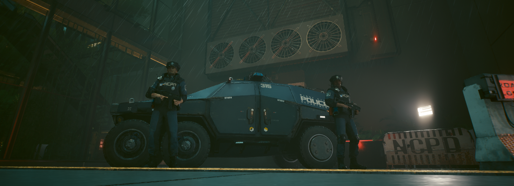

Alpha-Male
DRESDEN - Wer überfiel das Anwesen der Familie Procházka und tötete den CEO von EINHEIT ROT?
Diese Frage beschäftigt Sachsen und die ADL seit beinahe zwei Wochen.
Nun bringt ein Pressesprecher der dresdner Polizei endlich Licht ins Dunkel.
Rückblick
Im Januar 2067 gab es einen Überfall auf den Geschäftsführer von EINHEIT ROT P. Procházka.
Man fand ihn und seine Ehefrau M. Procházková ermordet in ihrem verwüsteten Anwesen vor, gestohlen wurde scheinbar nichts.
Nach Angaben der Polizei wurden mehrere Tatverdächtige festgenommen - Gerüchten zufolge Angestellte bei EINHEIT ROT.
Ihr Motiv sei bisher unklar gewesen.

Vor Gericht: Hauptverdächtiger Minato K. packt aus!
Am gestrigen Tag gab ein Pressesprecher der Dresdner Polizei genaue Informationen zum Fall bekannt. Minato K. (m/ 36, IT-Spezialist) gestand seine Mitschuld an der Tat und nannte Tom W. (m/ 40, stellv. Geschäftsleitung) und Diana B. (w/ 29, Marketingleitung) als seine Komplizen. Alle drei Täter waren bei EINHEIT ROT unter Procházka tätig.
Doch nichts verlief nach Plan - Als Minato K. und Tom W. am Tag der Tat in das Anwesen einstiegen, rechneten sie nicht damit, dass Herr Procházka und Frau Procházková frühzeitig von ihrer Geschäftsreise heimkehren würden. Auf ihrer Suche nach den entscheidenden Unterlagen wurden die Täter von dem Ehepaar überrascht. In panischer Eile, so Minato K., tötete Tom W. beide Opfer durch mehrere Schüsse. Daraufhin flohen die Täter ohne Beute.
Die Opfer hinterlassen nicht nur eines der größten IT-Unternehmen Sachsens ohne Führung, sondern auch eine gemeinsame Tochter ohne Eltern.
“Die Polizei Dresden spricht allen Bekannten und Angehörigen der Familie Procházka ihr Beileid aus und wird ihr Möglichstes tun, damit sich eine solche Tragödie nicht wiederholt.”, beendet der Pressesprecher seine Rede.
Minato K. wird zu 13 Jahren Haft verurteilt.
Tom W. wird zu einer lebenslangen Haftstrafe verurteilt.
Diana B. hatte bei der Planung der Tat geholfen. Sie wird zu 8 Jahren Haft verurteilt.